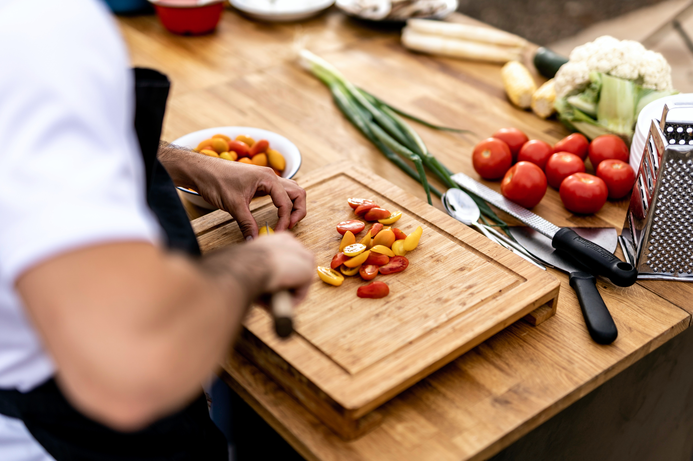

Somos un equipo apasionado detrás de la página de recetas veggie. Nuestra misión es compartir deliciosas y vibrantes recetas basadas en plantas. Creemos en disfrutar de comidas sabrosas y sostenibles que nutren tanto tu cuerpo como el planeta. Explora nuestras creaciones culinarias que celebran la diversidad de ingredientes vegetales y descubre lo deliciosa que puede ser la cocina vegana y vegetariana. ¡Bienvenido a nuestra comunidad veggie!